Yordanos
literature
አንባቢ ያረገኝ - ካትሃ ኢዱሊስ
ማንበብ... ጊዜ ሰጥተን በሞተ ዛፍ ላይ የተቀባ ቀለም ላይ ማፍጠጥ ነው። ይህ የሰለጠነ ዘመን ደግሞ ቀለም ቀያሪ መስታወት ላይ ይህን ድርጊት ማድረግ እንድንችል አድርጎናል። በህይወቴ ለንባብ አብዛኛውን ጊዜ የምሰጠው ትርጓሜ ይህ ነበር። በትምህርት ምክንያት ማንበብ ባይጠበቅበት ኖሮ ልጅ ዮርዳኖስ አንዳችም ፊደል ሚያነብ አይመስለኝም።
የደረጃ ትምህርት ቤት እያለው አንድ ሁለት ጊዜ ለማንበብ ሞክሬ አውቃለው። ከማስታውሳቸው መፅሀፎች ውስጥ፤ ያው የፈረደበት ፍቅር እስከ መቃብር፥ ክቡር ድንጋይ፥ ያልተኖረ ልጅነት፥ እንዲሁም መፅሀፍ ቅዱስንም ጀምሪያቸው ነበር። ከነዚህ ሁሉ በግድ የጨረስኩት ያልተኖረ ልጄነትን ብቻ ነበር። ለረጅም ጊዜም እሱ ነበር የመጀመሪያዬም የመጨረሻዬም።
ከፍተኛ ትምህረት (ዩኒቨርሲቲ) የገባሁ ጊዜ ይህ ተቀየረ... የአራተኛ አመት ተማሪ እያለው ነበር ቃላቶች ላይ ፍላጎት ያደረብኝ። የኔ የንባብ ጅማሬ እንደ አብዛኛው አንባቢ ሚያኮራ አይደለም። ማንበብ ያስተማረኝ ጓደኛዬ አይደለም፤ ወላጆቼም አይደሉም፤ አስተማሪዎቼም አይደሉም፤ በአጭሩ ንባብን ያሳየኝ ሌላ አንባቢ አይደለም።
...እኔን አንባቢ ያረገኝ “ጫት” ነው።
አዎ ጫት ነው። ታሪኩ አጭር ነው። ለጥናት ብለን ቃምን፤ ትምህርቱ በጣም ከባድ ከመሆኑ የተነሳ በጫቱ ራሱ አልቻልኩትም ነበር፤ እንደውም “ወይ በጎመን ልሞክረው እንዴ?” አስብሎኛል።
በዚህ ዘመን በቂ ጊዜ ማጥፊያና ራስን መዘናጊያ መንገዶች አሉ። ፈጣሪ ብሎት ያን ቀን የቱንም ማድረግ አልቻላኩም ነበር። ላለማጥናት ብቻ ብዬ አጠገቤ የነበረውን መፅሀፍ አነሳሁት። አዳምና ሔዋን ነበር። የአዘርግ መፅሃፍ ነበር። ምርቃናው አናቴ ላይ ወጥቶ አላስተኛ ስላለኝ ሙሉ ለሊቱን እያነበብኩት አነጋሁት።
...ወደድኩት።
ከዚያም ቀጠለ፤ ማንበብ ሱስ ሆነብኝ... ከዚህ በፊት ለትምህርትና ለእውቀት ማነበውን ያህል ለመዝናናትም ማንበብ ጀመርኩ። መፃፍም እየሞከርኩ ነው፤ ፅሁፌ ጥሩ ይሁን አይሁን አላውቅም ግን እፅፋለሁ።
ይህን ይመስላል። ታሪኩ ቀላል ስለሆነ በአጭሩ ልቋጨው...
በአንድ ከአዘርግ መፅሀፍ የተወሰደ ግጥም እንለያይ
እስቲ ቅሜ ልየው ይህን የጫት ቅጠል
በአልባሌ አገር ይቅመዋል ግመል
ጫት ላንተ ቢመስልህ የሆነ ቅጠል
ለኔ ሻኛ ነው ያውም የግመል
ሰኞም ቀንጆ ሊሆን ይችላል
ሰኞ... በህይወቴ በጣም ብዙ ማሎዳቸው ነገሮች አሉ። የታክሲ ሰልፍ፣ በበላበት እጁ ብርጭቆ የሚያነሳ ሰው፣ ቀይ እስንርቢቶ፤ ብቻ ግን ብዙ ናቸው። ከነሱም መካከል ብቻ ሳይሆን አስበልጬ ማሎደው ነገር ሰኞን ነው። ምናልባት እንደማንኛውም ሰው የስራ ቀናት መጀመሪያ ስለሆነ ስንፍናዬ ነው እንዳሎደው ሚያረገኝ። ቢሆንም አሎደውም አሎደውም።
ይህ ለሰኞ ያለኝ ጥላቻ ሌላውም ሰው እንደኔ ያስባል የሚል ውድቅ አስተሳሰብ ሳይሰጠኝ አይቀርም።
በዛሬዋ እለት ሚያዚያ 14 2018 እንደተለመደው ይህን የማልወደውን ቀን እያሳለፍኩት ነው። ከቀኑ ሰባት ሰአት ከስድስት ደቂቃ ሆኗል። 6 ኪሎ በሚገኘው ገርባ ቡና ሱሳችንን አያስተናገድን እንገኛለን።
ፊት ለፊቴ በተቀመጡ ጥንዶች ምክንያት ምናልባት የሰኞ አስቀያሚነት የኔ አስተሳሰብ እንጂ የተፈጥሮ ህግ እንዳልሆነ እያሰብኩ ነው።
አዲስ እጮኛሞች ይሁኑ ወይም በጣም ይዋደዱ መለየት አልቻልኩም። ከጎኔ የተቀመጠው ጓደኛዬ ከኔ ጋር ማውራት ትቶ ዘመኑ ካመጣለት አራት ማዕዘን መስታወት ጋር ጣቶቹን ያፍታታል። ይህን አጋጣሚ ተጠቅመው አይኖቼ ዙሪያቸውን ያስሳሉ። ያኔ ነበር ጥንዶቹን ያስተዋልኩት። ልጅ እያለን መዳፋችንን በመግጠም ተቃራኒው ሰው አይበሉባችንን ለመምታት እየሞከረ እኛም ሽል በማለት ተራውን ለመቀየርና የእኛ የመምታት ተራ ለማምጣት የምንሞክርበት ጨዋታ አየተጫወቱ ነበር። ጓደኛዬን ጠርቼው አሳየሁት። እሱም "በዚህ አድሜዬ እንደዚ አላረግም አለኝ"። አልተስማማሁም በሱ ሃሳብ።
ማየት ቀጠልኩ። መጫወትም ቀጠሉ። የልጅቷ ተራ ደርሶ አውቃም ይሆን ሳታውቅ በሀይል ሞቅ ያለ ምት መታችው። ልጁም ጥርሶቹን ገጥሞ ንፋስ እያሶጣ እጁን አውለበለበው። ይህን ስታይ እጁን በፍጥነት ተቀብላ ግንባሯን አስነክታ አይበሉባውን ሳመችው። ይህን ሳይ የተሰማኝ በነዚህ ሁለት ሰዎች መሀል ፆታዊ ፍቅር ብቻ ሳይሆን ክብርም እንደነበረ ነው።
አይኖቼ ከጥንዶቹ ነቅዬ ከጓደኛዬ ጋር ማውራት ጀመርን። አይኖቼ ግን እየሰረቁ ማየት አላቆሙም። እያወሩ አልነበረው። በዝምታ አንድ ላይ ተቀምጠዋል። የመቀያየም ዝምታ አልነበረም። የወሬ ማጣት ዝምታም አልነበረም። ሰው ቡና ለመጠጣት የሚመጣው ሱስ ለማስተናገድ ብቻ ሳይሆን ለጥናት ለመንቃት፣ ጨዋታ፣ አንዳንዴ ደግሞ ወሬና ሀሜት ፍለጋ ነው። "ከዘጠኝ እብዶች መካከል ጤነኛ ለመሆን መሞከር የበለጠ እብደት ነው" እንደሚባለው የማያወሩበት ምክንያት ምን ሊሆን ይችላል ብዬ ራሴን ጠየኩን።
ከጊዜ ቡሃላም ይህ ዝምታ የሰላም ዝምታ ሆኖ ታየኝ። እነዚህ ጥንዶች ጊዜ ማሳለፊያ ፈልገው ወይም አንዱ ሌላውን ለማስደመም ሙከራ በማድረግ የጀመሩት ወሬ የለም። ለማስተናገድ የመጡት ሱስ እንደኔው የብና ሳይሆን የእርስበርስ ሆኖ ታየኝ። ለነዚህ ሰዎች ይህቺ ጊዜ ሰኞ አልነበረችም። ሚያዚያ 14ም አልነበረችም። የነሱ ሰዓት ነበረች። ጥሩም ነበረች።
እኔ ለሰኞ የሰጠሁት ትርጉም እንጂ ሰኞ መጥፎ ቀን ሆኖ አይደለም ብዬ አሰብኩ። ሰኞም ቆንጆ ቀን መሆን ይችላል ብዬ አሰብኩ።
ምናልባት አይኔ ያረፈበትን የህይወት ቴያትር ከሚገባው በላይ ተርጉሜው ይሆናል። ይህን ፅሁፍ መፃፍ ጥሩ ምሳ ሰዓትን ማሳለፊያ መንገድ ሆኖ ስለታየኝ ነው። እውነቱን ለመናገር ከተባለም አሁንም ለሰኞ ያለኝ አመለካከት አልተቀየረም። አልወደውም።

የበዓሉ ሴቶች(ገጸ ባህርያት)
"ማንም ወንድ ሉሊትን ተራምዷት ሊሄድ አይችልም" በማለት ኩሩነቷን ያሳየችው ሉሊት ታደሰ
ከአድማስ ባሻገር
"ከኔ እርካታ የሚያገኝ ወንድ የለም፣ እኔ ለወንዶች ምንግዜም የውሃ ጥም ነኝ።" ብላ ለወንድ ደንታቢስነቷን ያሳወቀችው ሂሩት ጉልላት
የቀይ ኮከብ ጥሪ
"እንዲህ እንደቀለድክብኝ አትቀርም። እኔም ተራዬን እቀልድብሃለው ....እኔ ለባብሼና አጊጬ ብወጣ ሺ ወንድ አስከትላለሁ፣ ደግሞ ላ'ዲሳባ ወንድ።" እያለች ማንነቷን ለማሳወቅ የምትጥረው ጽጌ ሀይለማርያም
ደራሲው
"ያባቴን ፍቃድ ለመፈፀም ለመስዋዕትነት እንደ በግ አልጎተትም!" በሚል መራር ቃል የቆየውን ልማድ እምትቃወመው አይናለም ተካ
ሀዲስ
"ወንድ ቀንድ አስበቅላለሁ......በወንዶች መጫወት ደስ ይለኛል አባቴ ይሙት" በማለት ፍላጎቷን በግልፅ እምትናገረው ፍያሜታ ጊላይ
ኦሮማይ
…ቆፍጠን አርጎ ነው ሚፅፋቸው እንስቶቹን :)
ዳስ ጣል!
…አባይ ለዘዴው በአፍ ይቀድማል
ቴዲ አፍሮ
አምኖ መከዳት እንዴት ያማል
ወርቅ ያበደረው ደርሶት አለት
እንዴት ይችላል ዝም ማለት…
ወይድ አንተ አትንገረኝ ማንነቷን፤
ምጥ አታስተምርም ልጅ እናቷን።
ወይድ አንተ አታስቆጥረኝ ደም አጥንቴን፣
እኔ አውቀው የለም ወይ ማንነቴን።
ወይድ አንተ ላንሳበት ባንዲራዬን፣
አረንጓዴ ቢጫ ቀይ አርማዬን።
ባንዲራዬን አንሳው
ዓላማዋን አንሳው
በል አንሳው
ወደ ላይ አንሳው!
ፅድቅና ኩነኔ ቢኖርም ባይኖርም፤
ከክፋት ደግነት ሳይሻል አይቀርም
እልፍ ከሲታዎች ቀጥነው የሞገጉ፤
በውቀቱ ስዩም
“ስጋችን የት ሄደ” ብለው ሲፈልጉ፤
በየሸንተረሩ በየጥጋ ጥጉ፤
አስሰው አስሰው በምድር በሰማይ፤
ቦርጭ ሆኖ አገኙት አንድ ሰው ገላ ላይ
ሶስት የከበደ ሚካኤል ግጥሞች
የተማረ ሆኖ እውነቱን የማይገልጽ ፣
ባለ ጸጋ ሆኖ ገንዘቡን የማይሰጥ፣
ደሃ ሆኖ መስራት የማይሻ ልቡ፣
ሶስቱም ፍሬ ቢሶች፣
ለምንም አይረቡ።
አይን የለውም አሉ የሰነፍ ልመና
ወደ አምላክ ሲጸልይ ማታ በልቦና
መንገዱ ሳይመታኝ ባቧራ በጭቃ
አድርገኝ ይለዋል ላገሬ እንድበቃ
እንጦጦ ተኝቼ ሃረር እንድነቃ
መርዝም መድሃኒት ነው ሲሆን በጠብታ
ከየዕውቀት ብልጭታ የተወሰደ
እንዲሁም ለተንኮል አለው ቦታ ቦታ
ምን ቢሰለጥኑ ቢራቀቁ በጣም
ሁልጊዜ ደጋግሞ ብልጠት አያዋጣም።
በጅ የተበተቡት ተንኮል ዞሮ ዞሮ
ማጋለጡ አይቀር እጅና እግር አስሮ ።
መጽሓፉም ይለናል ሲያስተምረን ጥበብ
ብልጥ ሁን እንደባብ የዋህ ሁን እንደርግብ
ስለዚህ በብልጠት ተንኮል ስትሰሩ
በዝቶ እንዳይገላችሁ ገርነት ጨምሩ ...
ምነው ሆዴ ባባ
...ስለምን ሳስለምን ሁለት ዓመት ሞላኝ
ሙሉቀን መለሰ
እባክህ አምላኬ አንተ ሁነኝ ለማኝ
ወይ እሺ አሰኝልኝ ወይ እሷን አስጠላኝ
ወይ ግደላትና ተስካሯን አስበላኝ...
እውነት ነው
አዶኒያስ በቀለ
ተፈጥሮ ከህጎች ለስሜት ያደላል፤
ማን ለሰማይ ብሎ ምድርን ይጥላል።
አመነዝራለሁ አመነዝራለሁ፤
ከገነት ከሲኦል ሴቶችን አምናለሁ።
እንደ ፀበል ፀዲቅ እንደ ድግስ ጠላ
የዶርም ልጅ
እስኪ ቅመሱልኝ አይባልም ገላ
እኔ ምን አገባኝ
እኔ ምን አገባኝ የምትሉት ሀረግ
ኑረዲን ኢሳ
እሱ ነው ሀገሬን ያረዳት እንደበግ
የሚል ግጥም ልፅፍ ብድግ አልኩኝና
ምን አገባኝ ብዬ ቁጭ አልኩ እንደገና
ኢያሪኮ 999 ላይ ያሉ በሄርሜላ አበበ የተፃፉ ሁለት ሚያምሩ ግጥሞች...
ሰው
“አዳም ተፈጠረ” ተናገሩ ቄሱ
29/10/99
“ከዝንጀሮ መጣ” ቀጠለ ሳይንሱ።
ሁሉም በየምክኒያት እየበታተነ
ይመረምር ጀመር ያኔን እንደኖረ
አስጨንቆት ኖሮ ማን እንደነበረ
ያሁኑ ጥያቄ የዘመኑ ራስምታት
“ሰው” ነበርኩኝ ሳይሆን...
“ሰው ልሁን” ነው ልፋት።
ተረኛ
ህልሙ ማርኮት ሁሌ በቶሎ ሲተኛ
04/03/03 ማታ 6፡30
የአለም ህይወት አድርጎት ብቸኛ
ሊያልም ተነሳ ዛሬን አንቀላፍቶ
የህልሙን ይዞታ ግዛቱን አስፋፍቶ
ህልሙ አየማረከው ደግሞ እየተኛ
እድሜውን ጨረሰ መጣበት ተረኛ።
Florence
A game by Mountain Games
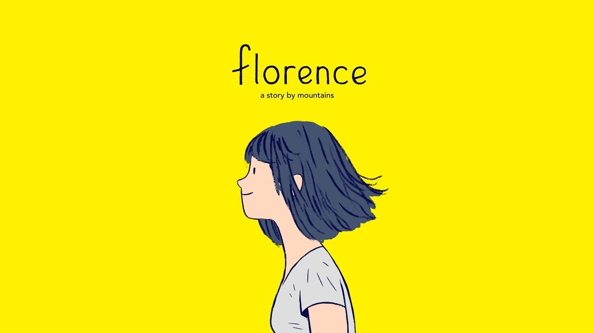
In my search for good narrative games, I have found this beautifully drawing and animated story game made by Mountain Games called Florence. It explores the life of a lady called ‘Florence’. It shows her current life, ambitions and dreams, love life and her childhood.
Florence is an everyday person just like the rest of us. The calmness of this game is wonderfully crafted to show a normal life of ups and downs.
Florence, riding her bicycle on a normal day, stumbles across a musician that she has seen playing a few days ago… She fell off her bike, maybe she was mesmerized by him.
They talk and soon they went out on dates. Get into a relationship and eventually move in together. They had great ambitions. He wanted to be a great musician and she, following her childhood dreams, wanted to be a great artist. She loved to draw.
The narrative shows the start and decline of their relationship in an elegant way. A story told with pictures and animation instead of words and huge written walls of text.
The story shows how Florence lets go of her past after their breakup, moving on to achieve her dreams, fixing her relationship with her mother, and in general becoming happy.
I don’t know how many times I said it and I don’t know how many times I’ll say it. This game… is BEAUTIFUL, from drawings to animation, from the narrative to the mini games to the story. I loved it.
It said it was Mountain Games’ first game. Well, they have nailed it with this one. I’ll be sure to check out their work in the future.
Here is a link for anyone who wants to try it out... Click Here!
8-8-18
ኢቶሪካ
እስከ እዚች ቀን ድረስ በ2018 እንደዚህ በተስፋ የጠበኩት ነገር የለም። ሚያዝያ 08፥ 2018 ዓ.ም. (8-8-18)፤ ማንም የሙዚቃ አድናቂ ይህን ቀን የሚረሳው አይመስለኝም። የሙዚቃው ንጉስ ቴዎድሮስ ካሳሁን (ቴዲ አፍሮ) አለምን 18 ዘፈኖችን የያዘውን አዲሱ አልበሙን (ኢቶሪካን) ከቀኑ ስምንት ሰዓት ላይ ያሰማበት ቀን ነው።
ስለዚህ ክላስ ቀጥቼ ላይቭ ለማየት ስወጣሁለት አልበም አንዳንድ ነገር ልበል።
ታላቅ ሙዚቀኛ የሚባለው ጥሩ ግጥምና ዜማ የሚያንጎራጉረው ሰው ነው ብዬ አላስብም። ሙዚቃ የሰው ልጅ መግባቢያ ነው። ስሜታችንን የምንገልፅበት የስነ ጥበብ አካል። አንድ ሙዚቀኛ፤ ምድራዊም ሆነ መንፈሳዊ፤ ውስጡ ያለውን በስድ ንባብ ሊያወጣው ማይችለውን በዜማ የሚናገርበት መግባቢያ ነው።
ቴዲ 18 ዘፈኖችን ነው የለቀቀው፤ እርግጠኛ ነኝ እኔ ብቻ አይደለሁም እሄ ሁሉ ዘፈን ያልበቃኝ።
ይህንን ዘፈን በ2050 የምትሰሙ ሰዎች እኛ የ2018 ነዋሪዎች 8፡00 ሰዓት አልደረስ ብሎን በቴዲ ዘፈን ጉጉት ቀኑ አልሄድ ብሎን ጠብቀን የሰማነው ታሪካዊ ዘፈን እንደሆነ እወቁ ከኛ ተማሩ ዘረኝነት ብሔርተኝነት እኛን ሰላም አሳጥቶን የነበረ ነገር ነው ፍቅር ከእናንተ ጋር ይሁን ኢትዮጲያን ውደዱ ፍቅር ያሸንፏል እንዳልካቸው አሰፋ።
የዩትዩብ ኮሜንት
እየጠቀስን እናንሳቸው...
18. ጀምበር
ሚያዚያ 08 ላይ ከቀኑ ስምንት ሰዓት በጉጉት የጠበቅነው አልበም ሲለቀቅ ለመጀመሪያ ጊዜ የሰማነው ዜማ ነው። ልክ እንደ ጀምበር።
ዘፈኑ በእርፎ መረባ ስነ-ስርዓት ይጀምራል። እርፎ መረባ የተፈጥሮም ኾነ ሰው ሠራሽ ችግሮች ሲከሰቱ ከችግሩ እንዲጠብቃቸው እናቶች ሰብሰብ ብለው ፈጣሪን የሚለምኑበት ሥርዓት ነው። እነዚህ እናቶች ዱበርቴዎች ይባላሉ። ዱበርቴ ማለት አስታራቂ ማለት ነው።
…አንተ ወዲህ አንተ ወዲህ፤ እርፎ መረባ
መረባ
አማራ፥ እስላም፥ ኦሮሞ፥ ትግሬ አይባልም፤ እርፎ መረባ
መረባ
ኢትዮጵያ ኢትዮጵያ ናት፤ እርፎ መረባ
መረባ
ምን ይገነጣጥሏታል፤ እርፎ መረባ
መረባ
ቡሃላ እየመጡ፤ እርፎ መረባ
መረባ
ቀጥሎም ቴዲ “ጀምበር ልይሽ ባይኔ” እያለ በተደጋጋሚ የለውጥ ምኞቱን ይገልፅልናል።
የህፃናት አምባ ልጆች መዝሙር ይከተላል...
ፀሐዬ ደመቀች ደመቀች
ብርሃኗ ለኛ ማለት አሁን አወቀች አወቀች
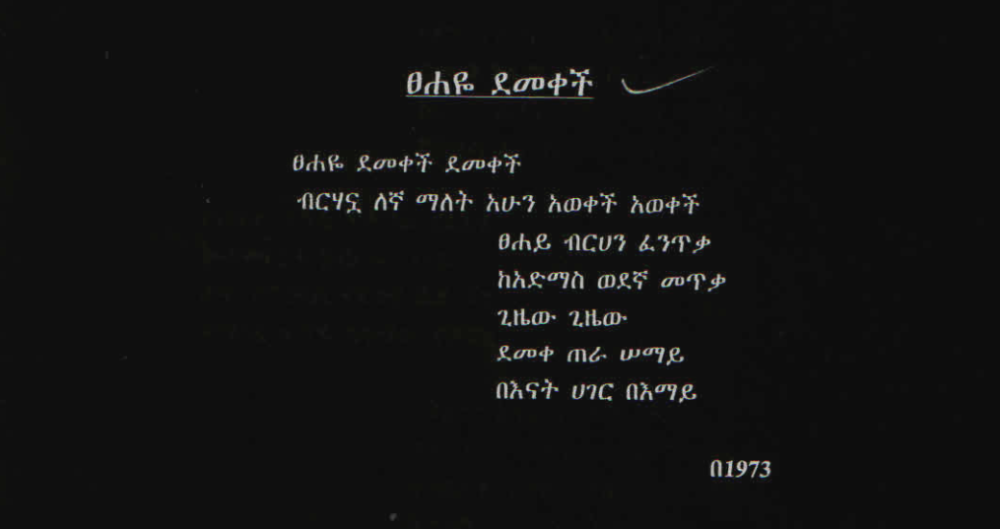
...ማናቸውም ኢትዮጵያዊ ትክክል መብት እንዲኖረውና የተወደደ ህዝባችንን ሁሉ የአንዲት ቤተሰብ ተወላጆች በወንድማማችነት እኩል እንዲኖሩ ዘወትር የተከተልነው አላማ ነው...
ከ1948 የቀ.ኃ.ሥ. ንግግር የተወሰደ
ቴዲ ናፍቆቱንና ምኞቱን በመግለፅ ይቀጥላል
...እምዬ ኢትዮጵያ፥ አንቺ የፍቅር ሀገር፤
ምሶሶሽ ዘመመ፥ ሆነሽ የዓለም ማዕገር፤
ለብሼ ብተኛ እንቅልፍ የለኝ ማታ፤
አጣሽና ልቤ ካለሽበት ቦታ፤
በፈካ ሰማዩ፥ በሄዱ እና እነ ሐምሌ፤
መተሽ በመስከረም፤ ጀምበር ልይሽ ባይኔ...
ደርግ ህዝቡ ሁሉ በተሰማራበት ሙያ ሁሉ የሚቻለውን ዋጋ በመክፈል አገሩን ከእራሱ አስበልጦ እንዲገኝ ኢትዮጵያንም ከከፍታ ማማ ላይ እንዲያስቀምጣት እንደመቀስቀሻ ይጠቀምበት የነበረው መዝሙር “ኢትዮጵያ ትቅደም” ይቀጥላል...
ወንዞች ይገደቡ ይዋሉ ለልማት፤
በከንቱ ፈሰዋል ለብዙ ሺህ አመታት፤
ይውጡ ማዕድናት ላገራችን ጥቅም፤
ህዝቧም ታጥቆ ይስራ በተቻለው አቅም፤
ሀሁ ኢትዮጵያ ትቅደም
ሀሁ ኢትዮጵያ ትቅደም
መዝጊያው ላይም...
አሁን በኢትዮጵያ ሰዓት አቆጣጠር ከንጋቱ 11 ሰዓት ነው።
በማለት የሙዚቃው መጠናቀቂያ ነገር ግን የኢትዮጵያ ጀምበር (መጀመሪያ) መሆኑን ይነገረናል ቴዲ አፍሮ።
17. ስማ እራሴ
ቁርጥ ኖሮ አረቄ እንደማይቀረው፤ ቴዲ አፍሮ ብሎ ሬጌ አይኖርም ማለት ከባድ ነው። እንደ ጀምበር ረጅም ግምገማ አይሆንም ይሄ...
አልበሙ ላይ የመጀመሪያው ሬጌ ዜማችን “ስማ እራሴ” ከራስ ጋር ንግግር ሆኖ እናገኘዋለን። አብዛኞቻች በየግል ህይወታችን ከዚህ ዘፈን ጋር መግባባት ምንችል ይመስለኛል፤ ባንችልም እንኳ መቻሉ ጥሩ ነው ብዬ አስባለው።
በቅናት ባዝኜ፥ ለምን አረጃለሁ?
የሰው ቤት አላይም፥ የራሴን ኖራለሁ፤
ሲከፋኝ አንዳንዴ፥ እንደሰው ባለቅስም፤
አልጎዳም ጤናዬን፥ ምንም ከኔ አይብስም፤
አትቀደምምና፥ ምኞት ሁሌ ናት ተጓዥ፤
የሆዴን ጉዳት ስቃይ፥ ጥርሴ ናት ፈዋሽ።
አለም አጭር ናት፤ ከምናስበው በላይ። ለምን ተክፍተን እናሳልፋታለን?
ቴዲ አፍሮም...
ስማ ራሴ፥ አትከደን ጥርሴ፤
ተው ስቃ፥ ደስ ይበላት ነፍሴ
...እያለን የሳቅን ጥቅም ይነግረናል።
ዘፈኑ መጨረሻ ላይ የአንጋፋው አርቲስት መኮንን ላዕከን ቃለ መጠይቅ ቀንጭቦ አስገብቶታል...
ሀ... ሀ... ሀ... ሀ... ሀ...
እንዲ ነው እንዴ ያልከኝ መኮንን
16. መርከብ
ለሁለተኛ ጊዜ የሬጌን ስልት ተላውሶ የመጣው ዘፈናችን።
በዚህ ዘፈን ላይ አንድ የኢንተርኔት አስተያየት አይቼ ነበር። ለዚያ አስተያየት ከእኔ ግምገማ በላይ አንድ የፌስቡክ ፅሁፍ በሚገባ ይገልፀዋል ብዬ አስባው። ፠
እንደሚከተለው ነው...
መርከብ ላይ የተጣለ ዳስ!
መርከብ በተሰኘው የብላቴናው ዜማና መናጥ ውስጥ በመቶ ሺዎች ከፈሰሱት ኮርኳሪ ኮሜንቶች መሃል ይሄ ከታች የምታዩት አስተያየት ብዙ ምዕናብ ውስጥ ከቶ ልባችንን በጉልበት ይበረብራል። እነዚህ ኢትዮጵያውያን መርከበኞች በአንዱ የውቅያኖስ መሃል ሆነው የብሱ ናፍቋቸው እንደሆን ማን ያውቃል ? የባህር ምግቡ የሰለቸው ፣ እናቱ ባይኑ ላይ የምትሄድ ፣ እንጀራና የትንሳኤ ዶሮ የናፈቃቸው ኢትዮጵያውያን መርከበኞች ሰብሰብ ብለው ቴዲ በዘፈኑ ውስጥ ይቃትታል
መርከብ የመሃለቁ ጫፍ ባይሰራ
ረግጦ እንዳይቆም ሁሉ ካንዱ ስፍራ
ቃልሽ ሆነና ቦታው ማይገኝ
ተላላ አረገው ልቤን ሰው አማኝ
ቦይ ብቀድለት እንባዬም ፈሶም አይበቃው
ወፍ "ጭጭጭ" እስኪል
ቆሜ ነው ሌቱን ማነጋው
የሃገሬ ልጆች በመርከባቸው ላይ ሰብሰብ ብለው መርከብን እየሰሙ በአንድ ወቅት ከየመን እስከ ህንድ በተዘረጋ ህልምና የግዛት አንድነት ጥማት ትቃትት የነበረችውን ሃገር እያሰቡ አሁን መልህቅ አልሰራ ስላላት እንኳን በማዕበል ወጀቡ ይቅርና በረጋው የብስ ላይ መርጋት ስላቃታት ሃገራቸው እያሰቡ ይሆናል።
አምናለው ልክ እንደ መርከበኞቹ እልፍ አዕላፍ ኢትዮጵያውያን ሰብሰብ ብለው ይህንን ጥልቅ ዜማና ቁጭት ይሰሙታል። የሃገሬ ወታደሮች ሰብሰብ ብለው ፣ ወዛደርና ፖሊሱ መምህርና ተማሪዎቿ ፣ ድህነት ያሰደዳቸው እነ መሪማ ከማዳሞቻቸው ዞር ብለው በሻሽ በሂጃባቸው እንባቸውን እየጠረጉ ይሰሙታል...
ቦይ ብቀድለት እንባዬም ፈሶም አይበቃው
ወፍ "ጭጭጭ እስኪል
ቆሜ ነው ሌቱን ማነጋው
ኢትዮጵያውያን ሁሉ በሁሉም ስፍራ ሰብሰብ ብለው እንደ መርከበኞቹ ይቆዝሙበታል። አሁን በዚች ቅፅበት የሃገሬ ልጆች የትም ሆነው በቁጭትና በእንባ እየተብሰለሰሉ ሰብሰብ ብለው ልባቸውን ሰብረው ከራስ ከህሊናቸው ይሟገቱበታል። አምናለው ተሰብስበን ማዘናችንን የሚያይ አምላክ ማረፊያ ላጣች መርከብ ሃገራችን መልህቁን ያበጃል። በዚህ እድሜያችን ያየነው ግዙፍ እውነት ቢኖር የማይመስለው ሁሉ ጊዜውን ጠብቆ እንደሚሆን ነው!
እስከዛው ለክፉዎች ሰላም የላቸውም ጆሮም የማይሰማው ጉድ የለም!!!
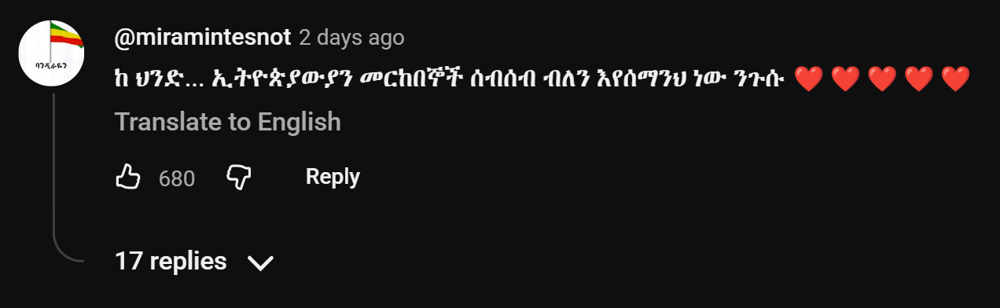
15. መሬማ
14. ዘ ፀዳል
13. የአዞ እምባ
12. ብልጭታ
11. በመስኮቱ
10. ታየኝ
09. ሺህ ቢባል (ወደ 90ዎቹ)
08. የማዕረግ ጥግ (አብራ ኗሪዬ)
07. ቲንታጎ (ፒንጋጎ)
06. ፂሆን ሙሽራዬ
05. ሰመመነ (ጉሬጌ)
04. ተወዳጅ
03. ሳምነው
02. ኢቶሪካ
01. ዳስ ጣል
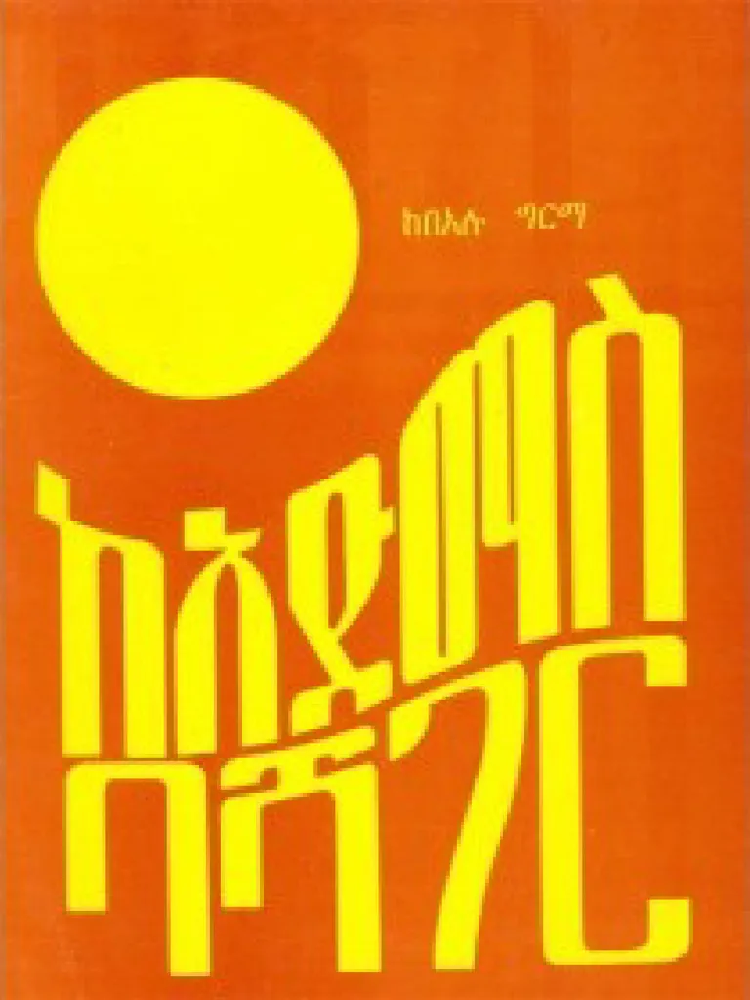
ከአድማስ ባሻገር
ያለቀ
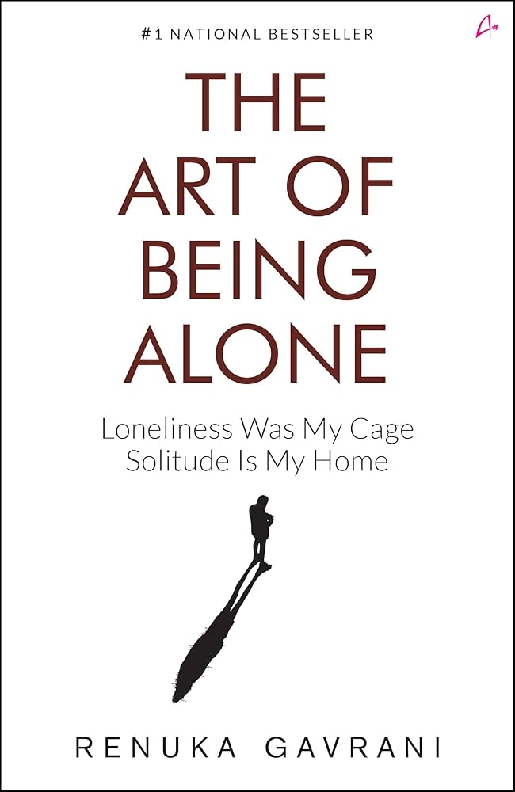
The Art of Being Alone
ሰFinished
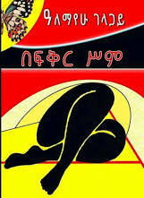
በፍቅር ስም
ያለቀ
Conversations With God - Book One
Finished
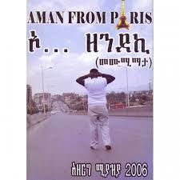
ኦ... ዘንደኪ
ያለቀ
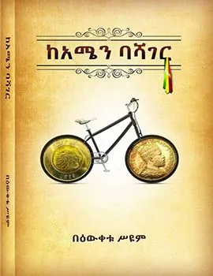
ከአሜን ባሻገር
ያለቀ

ሰመመን
ሚነበብ

ቺ
ያለቀ

ኦሮማይ
ያለቀ

Odin Book
Reading
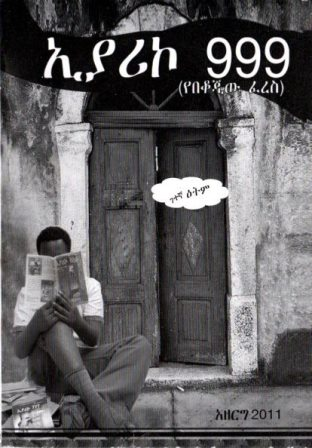
ኢያሪኮ 999
ያለቀ
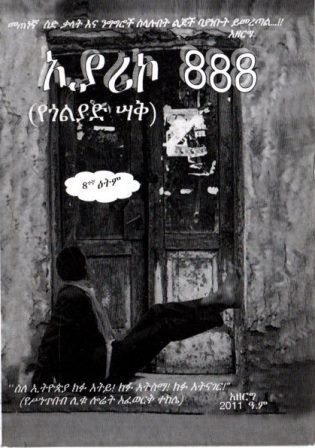
ኢያሪኮ 888
ያለቀ
ኢያሪኮ 777
ያለቀ
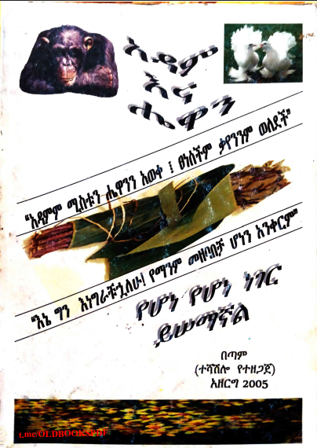
አዳም እና ሄዋን
ያለቀ
Steal Like an Artist
Finished
When you don’t know what you want then you want to have everything that is glittery and shiny.
— Renuka Gavrani
ጨዋ ማለት ያልተያዘ ባለጌ ነው
— አንድ ሰው
Simplicity is the ultimate sophistication.
— Leonardo da Vinci
An idiot admires complexity, a genius admires simplicity
— Terry A. Devis
Art is never finished, only abandoned.
— Leonardo da Vinci
የሰው ልጅ እውቀትን የሚማረው አንድም ከፊደል ገበታ 'ሀ' አልያም ከመከራ አዝመራ 'ዋ' ብሎ ነው
— ሎሬት ፀጋዬ ገብረመድህን
It works on my machine.
— Every single one of you, including me XD
If life isn't fair for everyone, doesn't that make her fair for everyone?
— Anonymous